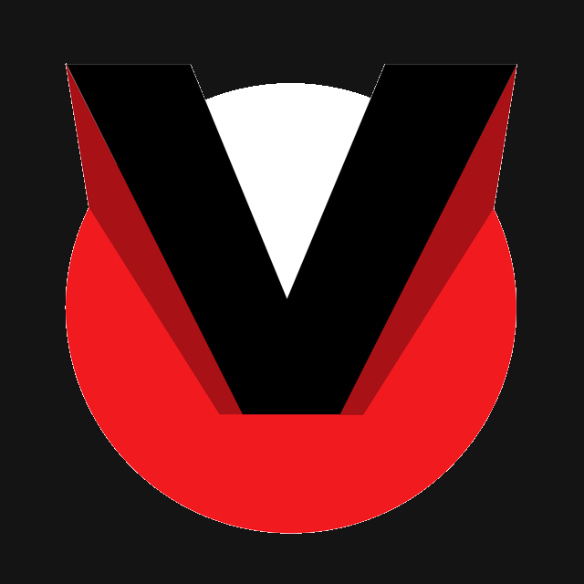

Movimentação
A ausência do kimono muda as pegadas e incentiva ajustes de posição e deslocamento.

Escola de CombateVinicius OliveiraNoGi no Valentina, João Pessoa
Conheça a proposta de NoGi, a luta agarrada sem kimono, na ECVO no Valentina, em João Pessoa. Professor e horários estão em definição. Registre seu interesse para receber novidades.
Para quem é indicada
Benefícios da modalidade
A ausência do kimono muda as pegadas e incentiva ajustes de posição e deslocamento.
Entradas, transições e finalizações são treinadas com atenção aos fundamentos.
O NoGi amplia o repertório de luta agarrada de forma complementar ao Jiu-Jitsu com kimono.
Como registrar interesse
Professor e horários ainda estão em definição. O contato pelo WhatsApp registra seu interesse; não é matrícula nem reserva de aula.
Horários de NoGi
Ainda não há aulas disponíveis para agendamento. Fale com a equipe para registrar seu interesse e receber novidades quando a turma estiver definida.
Estrutura e metodologia
NoGi é a vertente de luta agarrada sem kimono. Compartilha fundamentos com o Jiu-Jitsu, mas tem uma dinâmica própria de controle e movimentação. O professor e a organização da futura turma ainda serão definidos.
Onde treinar
Escola de Combate Vinicius Oliveira
Rua Funcionário Publico Paulo Antônio Bastos Portela, 144
Valentina · João Pessoa, PB · CEP 58.067-242
Ponto de referência: Ao lado do Instituto Educacional Sucesso
Dúvidas sobre NoGi
NoGi é uma prática de luta agarrada sem kimono. Por isso, as pegadas e a movimentação têm dinâmica diferente do Jiu-Jitsu com kimono.
Sim. Iniciantes e praticantes podem falar com a equipe e contar seus objetivos.
NoGi é praticado sem kimono. Quando houver turma definida, a equipe orientará sobre roupas e equipamentos adequados.
O professor ainda está em definição. Registre seu interesse para receber novidades quando houver confirmação.
Nenhuma das duas modalidades tem horários definidos neste momento. Ainda não há aulas disponíveis para agendamento. Registre seu interesse na modalidade que deseja conhecer.
NoGi na ECVO
Fale com a equipe pelo WhatsApp e conte seu interesse. Professor e horários ainda estão em definição.